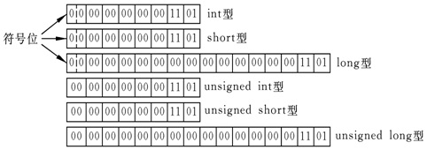
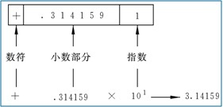

C语言是由B语言发展而来；
B语言（1970美国贝尔实验室），用于编写UNIX系统，在PDP7上实现；→C（1975），1978年C语言先后移植到大、中、小、微型计算机上，它独立于UNIX和PDP；在1983年后逐步对C语言进行ISO标准化；
32个关键字，9种控制语句，34种运算符；
C是面向过程的语言，C++是面向对象，应开发大型应用软件之需而产生的语言；
C语言本身没有输入输出语句，由scanf和printf等函数完成输入输出功能；
C语言不允许对数组的大小作动态定义，即数组的大小不依赖于程序运行过程中变量的值。
变量命名的规定：Ｃ语言规定标识符只能由字母、数字和下划线三种字符组成，且第一个字符必须为字母或下划线。
编译系统将大写字母和小写字母认为是两个不同的字符。
建议变量名的长度最好不要超过8个字符。
在选择变量名和其它标识符时，应注意做到“见名知意”，即选有含意的英文单词 （或其缩写）作标识符。
要求对所有用到的变量作强制定义，也就是“先定义，后使用” 。
十进制数10的二进制形式为1010，Turbo C 2.0和Turbo C++ 3.0为一个整型变量在内存中分配2个字节的存储单元(不同的编译系统为整型数据分配的字节数是不相同的，VC++ 6.0则分配4个字节）。
数值是以补码(complement) 表示的。
例如：整数13在内存中实际存放的情况：
对数据的描述：数据结构(data structure)
对操作的描述：算法(algorithm)
完整的程序设计：
数据结构＋算法＋程序设计方法＋语言工具
计算机算法可分为两大类别：
数值运算算法：求数值解，例如求方程的根、求函数的定积分等。
非数值运算：包括的面十分广泛，最常见的是用于事务管理领域，例如图书检索、人事管理、行车调度管理等。
一个结构化程序就是用高级语言表示的结构化算法。
结构化程序设计强调程序设计风格和程序结构的规范化，提倡清晰的结构。
结构化程序设计方法的基本思路是：把一个复杂问题的求解过程分阶段进行，每个阶段处理的问题都控制在人们容易理解和处理的范围内。
采取以下方法来保证得到结构化的程序：
自顶向下；
逐步细化；
模块化设计；
结构化编码。
两种不同的方法：
自顶向下，逐步细化；
自下而上，逐步积累。
设计程序最重要的一个步骤就是选择一个表示数据的好方法，在多数情况下，使用简单的变量甚至是数组都是不够的。
我们将从研究程序设计的关键部分，即程序表示数据的方式入手。通常程序开发的重要部分是找到针对程序中所使用的数据的较好的表示方法。正确地表示数据能够使程序其余部分的编写变得简单，如简单变量、数组、指针、结构、联合。
寻找正确的数据表示方式，不仅仅是选择一种数据类型，还必须考虑到哪些操作是必须的，也就是说，必须考虑如何存储数据，并且必须定义对数据类型来说哪些操作是有效的。
例如，C实现通常将C的int类型和指针类型都存储为整数，但是这两种类型有不同的有效操作集。比如，可能将一个整数与另一个整数相乘，但是不能将一个整数和另一个指针相乘。可以有*运算符来对一个指针取值，但是这个运算对于整数来说是无意义的。C语言为其基本类型定义了有效操作。但是，当您设计了一个方案来表示数据时，您可能需要自己来定义有效操作。在C中，可以通过把所需的操作编写为函数来做到这一点。简而言之，设计数据类型包括确定如何存储数据以及设计一系列函数来管理数据。
您还将看到一些算法(algorithm)，即操纵数据的方法；
设计数据类型的过程，这是一个将算法和数据表示方法相匹配的过程，如一些常用的数据形式，如队列、列表、以及二叉树；
假如您要创建一个地址簿程序。您将使用何种数据形式来存储信息？因为与每个项目相关的信息有很多类型，所以用一个结构来表示每一个项目显得很适合。如何表示多个项目？是标准的结构数组、动态数组，还是其他形式？各个项目需要按字母顺序排列吗？需要能够按邮政编码来搜索项目吗？需要执行的动作将影响您对如何存储信息的决定。简而言之，在开始编写代码之前，您需要做出许多设计上的决定。
C的结构体提供了在同一个数据对象中存储几通常是不同类型的数据项的方法；
#include <stdio.h>
void main（）
｛int a,b,c,d; /*指定ａ、ｂ、ｃ、ｄ为整型变量*／
unsigned ｕ； ／*指定ｕ为无符号整型变量*／
ａ＝12；ｂ＝-24；ｕ＝10；
ｃ＝ａ＋ｕ；ｄ＝ｂ＋ｕ；
printf（″ａ＋ｕ＝％ｄ，ｂ＋ｕ＝％ｄ＼ｎ″，ｃ，ｄ）；
｝
一个浮点型数据一般在内存中占4个字节(32位)。与整型数据的存储方式不同，浮点型数据是按照指数形式存储的。系统把一个浮点型数据分成小数部分和指数部分，分别存放。指数部分采用规范化的指数形式。
有些以“\”开头的特殊字符称为转义字符
\n 换行
\t 横向跳格
\r 回车
\\ 反斜杠
\ddd ddd表示1到3位八进制数字
\xhh hh表示1到2位十六进制数字
一个字符常量存放到一个字符变量中，实际上并不是把该字符的字型放到内存中去，而是将该字符的相应的ASCII代码放到存储单元中。这样使字符型数据和整型数据之间可以通用。
＋＋ｉ是先执行ｉ＝ｉ＋１后，再使用ｉ的值；
ｉ＋＋是先使用ｉ的值后，再执行ｉ＝ｉ＋１。
例如：
int i=3;
①ｊ＝＋＋ｉ；
i的值先变成4, 再赋给ｊ,j的值均为４
②ｊ＝ｉ＋＋；
先将 i的值3赋给ｊ,ｊ的值为３，然后ｉ变为４
自增（减）运算符常用于循环语句中使循环变量自动加１。也用于指针变量，使指针指向下一个地址
关系表达式与逻辑表达式的结果都是逻辑值，但他们的运算符及操作数有区别；都可以用来表示条件；
用关系运算符将两个表达式（可以是算术表达式或关系表达式，逻辑表达式，赋值表达式，字符表达式）接起来的式子，称关系表达式
例：a>b,a+b>b+c,(a=3)>(b=5),’a’<‘b’,(a>b)>(b<c)
关系表达式的值是一个逻辑值，即“真”或“假”。
例：关系表达式”a>b”的值为“真”，表达式的值为1。
C语言中没有专用的逻辑值，1代表真，0代表假
优先次序：
！(非)->&&()->||()
逻辑运算符中的“&&”和“||”低于关系运算符，“!”高于算术运算符
用逻辑运算符将关系表达式或逻辑量连接起来的式子就是逻辑表达式。
逻辑表达式的值应该是一个逻辑量“真”或“假”。
任何非零的数值被认作“真”
在逻辑表达式的求解中，并不是所有的逻辑运算符都要被执行。
(1)a&&b&&c 只有a为真时，才需要判断b的值，只有a和b都为真时，才需要判断c的值。
(2)a||b||c 只要a为真，就不必判断b和c的值，只有a为假，才判断b。a和b都为假才判断c
for(表达式1；表达式2；表达式3) 语句
for语句等价于下列语句：
表达式1；
while （表达式2）
{
语句；
表达式3；
}
循环辅助手段：continue,break，程序跳转；
一般说来，进入循环体后，在下次循环判断之前，程序执行循环体中所有语句。contine和break语句使您可以根据循环体内进行的判断结果来忽略部分循环甚至终止它；
多重选择：switch;
位运算：合理利用内存；
数据在计算机里是以二进制形式表示的，在实际程序中，许多系统程序需要直接对二进制位数据进行操作，还有不少硬件设备与计算机通信都是通过一组二进制控制和反映硬件的状态。C语言特别提供了直接对二进制位进行操作的功能，称为位运算。
位运算直接对内存中的二进制数据进行操作，无需转为十进制，因此处理速度非常快。正确地使用位运算，可以合理地利用内存，优化程序。
位操作通常向硬件设备发送一两个字节来控制该设备。其中的每一位都有特定的含义，同样地，通常使用代表特定项目的特定位来存储操作系统，关于文件的信息，许多压缩和加密操作都对单独的位操作。
高级语言一般不处理这一级别的细节，C在提供高级语言使得的同时，也能够在典型的为汇编语言所保留的级别上工作，这使其为编写设备驱动程序和嵌入式代码的首选语言。
使C区别于许多高级语言的特性之一是访问整数中个别位的能力。该特性通常是程序与硬件设备和操作系统连接的关键。
C主要有两个主要的访问位的工具，一个工具是位运算符，另一个是在结构中创建位字段的能力。
因为二进制的1和0可用于表示计算机内存和寄存器中位的打开和关闭状态，所以计算机硬件和二进制数字数字系统紧密相连，虽然C不允许以二进制形式书写数字，但是C识别与二进制相关的八进制和十六进制代码。
(1)位运算符中除～以外，均为二目（元）运算符，即要求两侧各有一个运算量。
(2)运算量只能是整型或字符型的数据，不能为实型数据。
按位与的用途：
(1) 清零。
(2) 取一个数中某些指定位。
(3)保留一位的方法：与一个数进行＆运算，此数在该位取１。
按位或运算常用来对一个数据的某些位定值为１。例如：如果想使一个数ａ的低４位改为１，只需将ａ与０１７进行按位或运算即可
∧运算符应用：
（１） 使特定位翻转
在C语言中，字符串是通过一维数组来存储的，字符串中字符的引用可以用下标法或指针法；
关于主函数，一个程序要运行，操作系统需要将部分控制权交给程序，而一个程序中可以有多个函数，所以规定，OS交给主函数以控制权；
C语言能够直接访问物理地址，具有低级语言的特点；
程序执行从main开始，在main中结束，其它函数通过嵌套调用得以执行；
不同版本的C编译系统所实现的语法功能和语法规则略有差别；
对于同一个问题，可以有不同的算法（解题方法和步骤），合适的算法(方法简单，步骤少)，算法可分为数值运算和非数值运算算法；
整数以补码存储，小数以指数的形式存储，分成小数与指数部分；
一个字符型常量存放到一个字符型变量中，实际上并不是把该字符的字型放到内存中去，而是将该字符的相应的ASCII代码放到存储单元中，这样使字符型数据和整形数据之间可以通用；
自增自减运算符常用于循环语句中使循环变量自动加1，也用指针变量，使指针指向下一个地址；
逗号表达式：#1,E2
整个表达式的值是E2的值；
如3+5，6+8的值是14；
a=3*5,a*4的值是60；
复合语句：用{}括起来的语句；
字符串结束标志："\0"
在C语言中，数组名代表该数组中的起始地址，如scanf("%s",&str);该语句不需使用"&"符号；
strcat(str1,str2)两个字符串连接，结果放在字符数组1中；函数调用后得到字符数组1的地址；
VC++6.0在一个工程中只能定义一个主函数；
计算机硬件的五大部件：
存储设备（内存与外存）－控制器－运算器－输入－输出
程序设计与五大部件的相关性
数据结构与算法对应内存与控制器及运算器，数据结构及算法形成的程序读到内存，由控制器控制存出指令及运算数据；
文件的输入输出对应外存；
位运算：合理利用内存；
指针：内存的快捷方式；
C++程序设计如果是一部大机器，那么基本数据类型就好比是C++的螺丝之类的零件，像数组、指针及更加高级的结构体和共用体则是这部机器的高级部件，对机器有效运转有不可或缺的作用。函数相当于一部机器的各个相对独立的模块，好比是机器的控制的控制装置、传动装置等。
注释：
//
/* */
库函数，C语言为我们提供了大量常用函数，使用时直接调用即可。使用这些库函数可以在很大程度上减少代码的开发量。比如我们经常使用的pringf()函数和scanf()函数，就是由标准输入/输出库提供的，可通过加载stdio.h去调用。
标准库函数由15个头文件组成，分别代表15个类别的函数；